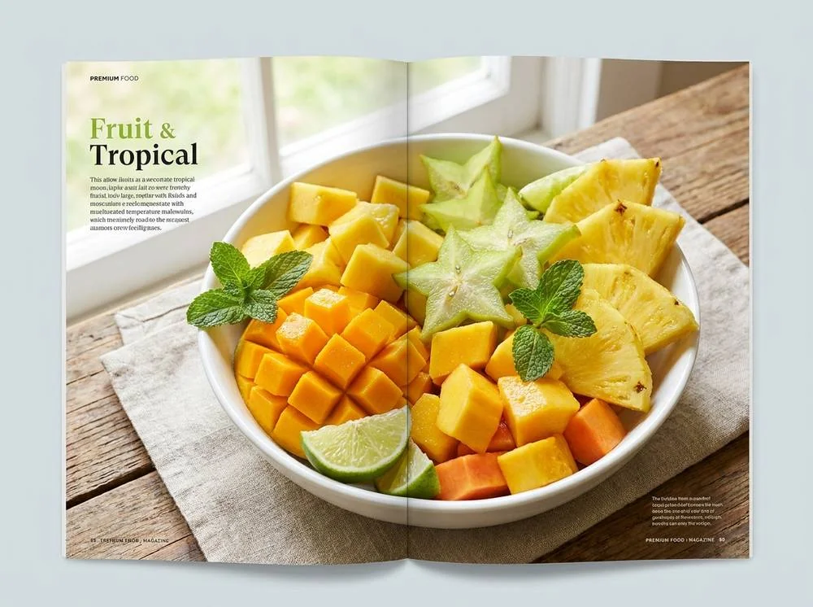
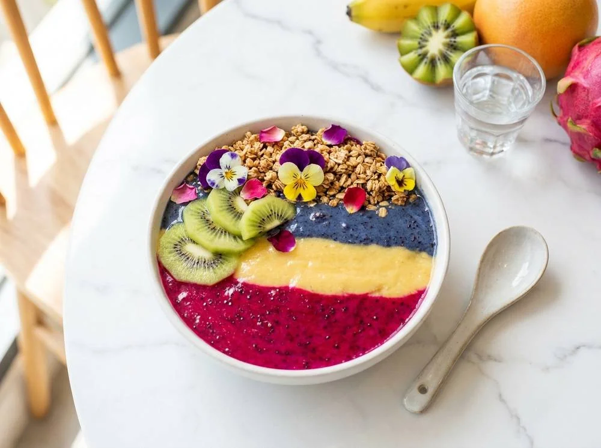
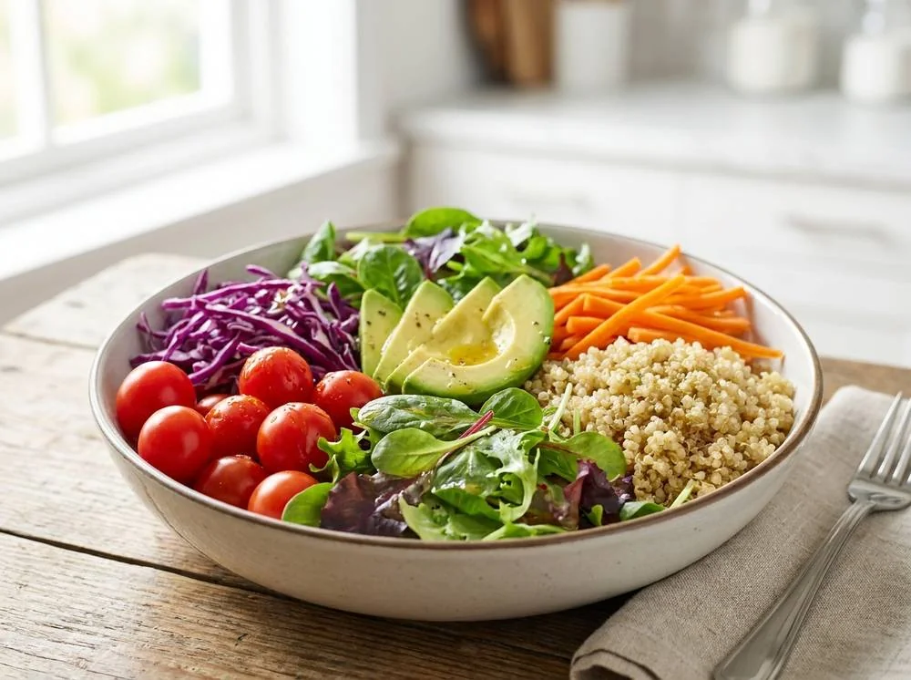
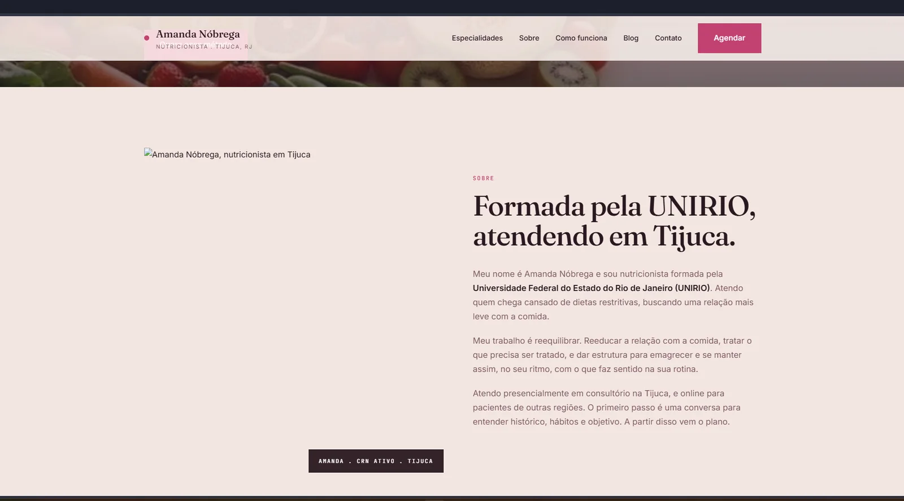
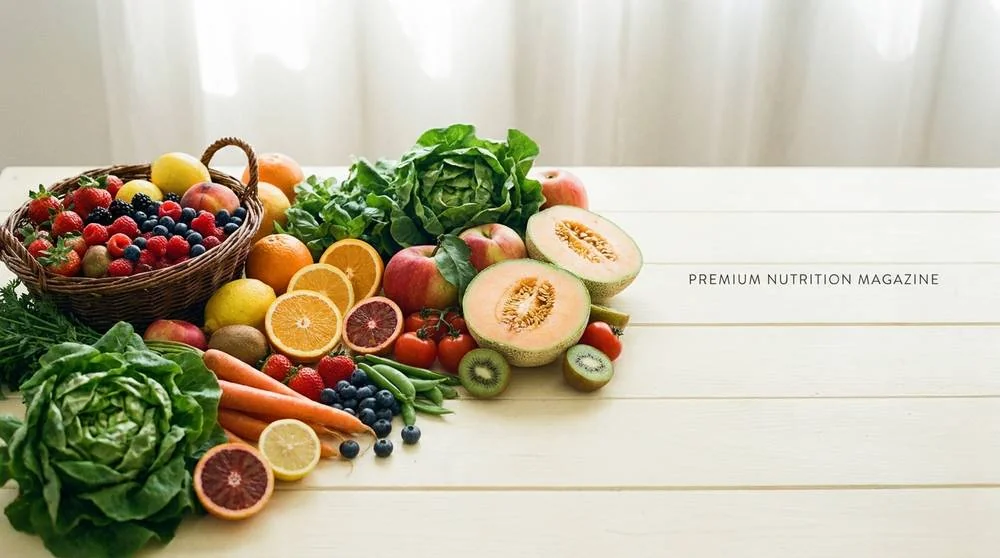

Reeducação alimentar, nutrição clínica, esportiva e estética, com um método próprio baseado em organização e constância.
Cada paciente chega com um motivo diferente. O que não muda é o método, construindo uma relação com a comida que sustenta o resultado no longo prazo.
Para quem quer comer melhor aos poucos, sem dietas impossíveis, e tornar o novo hábito permanente.
Agendar reeducaçãoSuporte para tratamento de patologias, ganho de massa e distúrbios alimentares, com conduta baseada na sua condição.
Agendar clínicaPara atletas que querem melhorar o rendimento, comendo como combustível do objetivo e não como obstáculo.
Agendar esportivaEmagrecimento e cuidado com desordens estéticas, com um plano que sustenta o resultado além da balança.
Agendar estética
Amanda trabalha com pacientes que já tentaram de tudo e não querem mais fazer dieta. O caminho proposto é construir uma relação tranquila com a comida, com plano e ajustes constantes.
Quero esse métodoMeu nome é Amanda Nóbrega e sou nutricionista formada pela Universidade Federal do Estado do Rio de Janeiro (UNIRIO). Atendo quem chega cansado de dietas restritivas, buscando uma relação mais leve com a comida.
Meu trabalho é reequilibrar. Reeducar a relação com a comida, tratar o que precisa ser tratado, e dar estrutura para emagrecer e se manter assim, no seu ritmo, com o que faz sentido na sua rotina.
Atendo presencialmente em consultório na Tijuca, e online para pacientes de outras regiões. O primeiro passo é uma conversa para entender histórico, hábitos e objetivo. A partir disso vem o plano.
Manda uma mensagem com seu objetivo. A Amanda responde em horário comercial, diz os horários disponíveis e tira a primeira dúvida antes de você se comprometer.
Uma conversa sobre histórico, hábitos, rotina e objetivo. Avaliação física se necessário. Sem julgamento. Sai com orientações iniciais mesmo no primeiro dia.
Plano alimentar personalizado, com lista de substituições e flexibilidade. Não e dieta pronta: e orientação para o que faz sentido na sua vida.
Retornos periódicos para avaliar resultados, ajustar o que não funcionou, e manter a constância. Presencial ou online, do seu jeito.